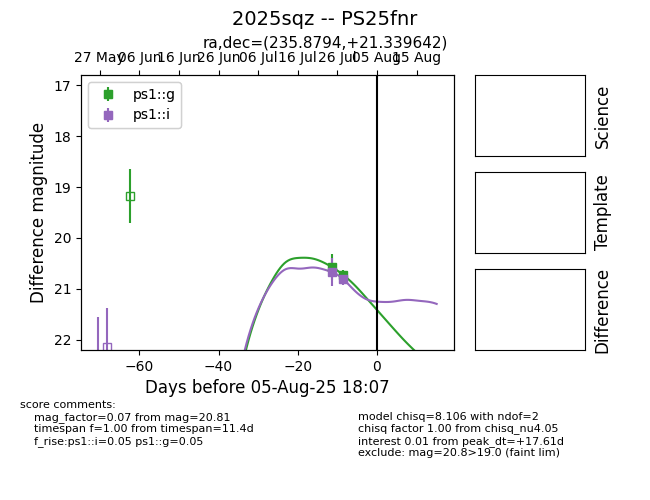

Target 2025sqz at 2025-08-05 18:28, see:
TNS: wis-tns.org/object/2025sqz
YSE: ziggy.ucolick.org/yse/transient_detail/2025sqz
alt names
2025sqz (yse,tns)
PS25fnr (panstarrs)
coordinates:
equatorial (ra, dec) = (235.8794,+21.33964)
galactic (l, b) = (34.1347,+50.53426)
photometry
last ps1::g=20.73, ps1::i=20.81
2 ps1::g, 2 ps1::i detections
